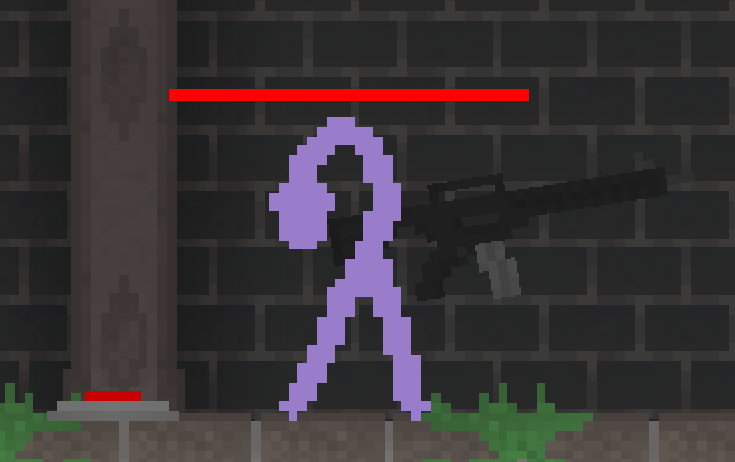
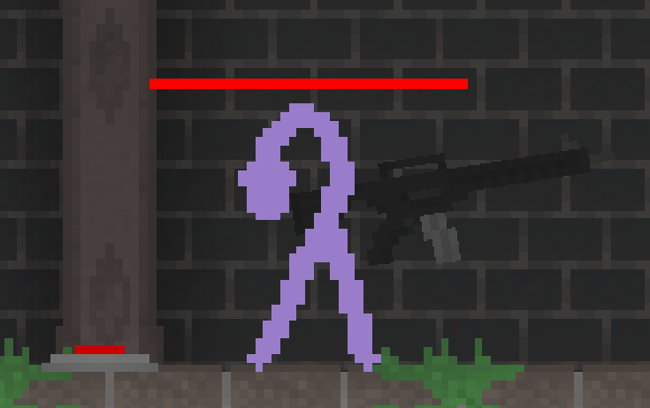

Introduction
This is a Unity project that I've started with a few classmates.
At first we weren't sure of what we wanted to make yet.
We just knew that we wanted to make it a 2D game,
since we all had experience with drawing 2D sprites,
and programming on a 2D plane is easier. And I then suggested that it be a multiplayer game,
because I like making multiplayer games.
We ended up with the idea of making a clone of Stickfight.
That's a fast-paced PvP game where you run around on platforms and try using various items
that spawn around the place to win the round.
And that seemed fun.
Game Description
The game has a main menu, where you can choose to either Host a game or Join an existing game. Once the Host starts the game, a randomly selected map is loaded in, and every player gets a random color, this way they can keep track of which character is theirs on the screen.
Controls & Abilities
-
-
-
-
-
-
-
- You can jump next to walls to climb them
Items
- Grenade
- Mine
- Shotgun
- Sniper
- Auto Rifle
- HP Potion
- Machete
Breakable platforms
The small platforms that don't have grass on them can be gradually broken if they're shot at.
Once they're fully broken they fall apart into rubble- the rubble particles have physics
and can be interacted with for a couple of seconds before they disappear.
So when you're standing on the platform, and it's broken, you can save yourself by jumping off of it's rubble.
Technical Section
Movement Input
Let's say you're playing a game, and you're moving to the left, holding the A key. You now want to move to the right, so you release the A key and press the D key.
- Situation A: You simultaneously release and press both keys at the same time, and you seamlessly transition from the one movement direction to the other. Good job!
- Situation B: You release the A key, and you try to press the D key as soon as you can, but you're a couple of frames late. Now you're sitting there, waiting out those
precious milliseconds as you're watching your character stand still. How infuriating. The worse is yet to come, though...
- Situation C: You mess up, and you manage to press the D key BEFORE releasing the A key. Now this can have catastrophic consequences; depending on how the game is
coded, there's a chance that when both of the movement keys are pressed, you arbitrarily move in some predetermined, hard-coded movement direction, and if that direction happens to be
left, you'll be going backwards! But, if you ARE lucky, that direction will happen to be right, and then you'll be fine... Sigh... But! If the developer of the game
you're playing decided that you'll be standing still if both keys are pressed, then you just found yourself in the same predicament as in situation B.. so..
Conclusion:
There are tons of situations in which you're being forced to waste your own time! Every time you decide to switch which direction you're moving in!
I see this in almost EVERY game I ever play! So.... here's my solution:
Instead of just checking what movement keys are currently being held, I also check at exactly what time they were pressed!
If I prioritize the movement keys based on which one was pressed LAST
, I resolve the situations listed above, preventing unnecessary, massive, time-wasting.

That's it!
Multiplayer
How did I implement multiplayer?
In order to get multiplayer functionality I used Mirror Networking - the open-source Unity networking library.
Doing networking can get pretty hard at times - it adds a whole 'nother dimension that you have to keep in mind.
But it's fun.
Whenever a player (client) does something, he sends a "Command". A Command is a function that can be called from a client to be executed on the server.
The server receives inputs this way, such as item interaction, ability usage, etc. The server then sends a "ClientRPC" to the clients. That's a function that's called from the server,
to be executed on all clients.
I don't have any measures against cheating, and I don't keep track of information to update late-joining players. So a player that joins 6 rounds later than the rest will be de-synced.